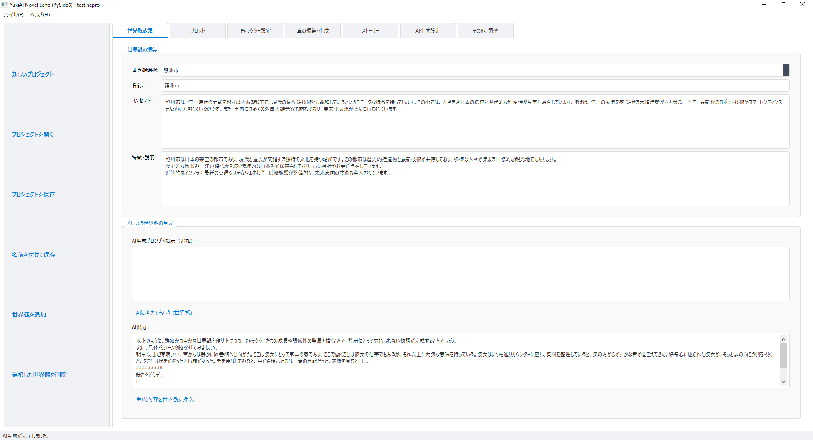

YukiAI NovelEcho
AI補助機能付き小説執筆ソフト
あなたの創造力を解き放つ、次世代の執筆パートナー
YukiAI NovelEchoは、AIの力を借りて、アイデアの創出から推敲まで、物語作りのあらゆる段階をサポートする革新的な小説執筆ソフトです。クリエイターの皆様が、より深く、より自由に、物語の世界に没頭できるよう設計されています。

主な機能
- AIによるアイデア出し: プロット、キャラクター設定、世界観構築など、執筆中に行き詰まった時にAIが新たな視点やインスピレーションを提供します。
- 文章の自動生成とリライト: 数行の指示からシーンを描写する文章を生成したり、既存の文章をより魅力的で表現豊かなテキストにリライトしたりできます。
- 対話形式でのキャラクター創造: AIと対話しながら、キャラクターの性格、背景、動機などを深掘りし、命を吹き込むことができます。
- 高度な文章校正: 誤字脱字のチェックはもちろん、文脈に合わせた表現の提案など、読みやすく洗練された文章に仕上げるためのサポートをします。
こんな方におすすめ
- 小説を書き始めたばかりで、何から手をつけていいか分からない方
- 新しいアイデアやインスピレーションを求めているプロの作家の方
- 執筆の効率を劇的に向上させたい方
- 物語の世界観やキャラクターをより深く、多角的に作り込みたい方
現在の状況と今後の予定
現在、YukiAI NovelEchoは開発版を公開中です。皆様に最高の執筆体験をお届けできるよう、機能の改善と追加を進めています。
開発版をダウンロード
ステータス: 現在開発版公開中
リリースに関する最新情報は、当サイトのニュースページにて随時お知らせいたします。どうぞご期待ください。